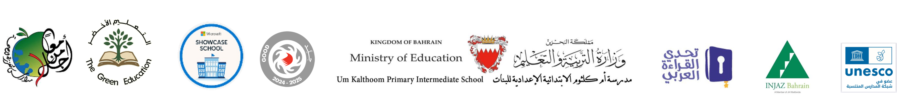

الأرشيف الذكي
التوثيقات والصور والخطط الأسبوعية وتقارير الزيارات المحفوظة.
جار تحميل الأرشيف…
الداخلية ضمن النتائج—
الخارجية ضمن النتائج—
التوثيقات—
الخطط—
تقارير المشاريع—

التوثيقات والصور والخطط الأسبوعية وتقارير الزيارات المحفوظة.
جار تحميل الأرشيف…